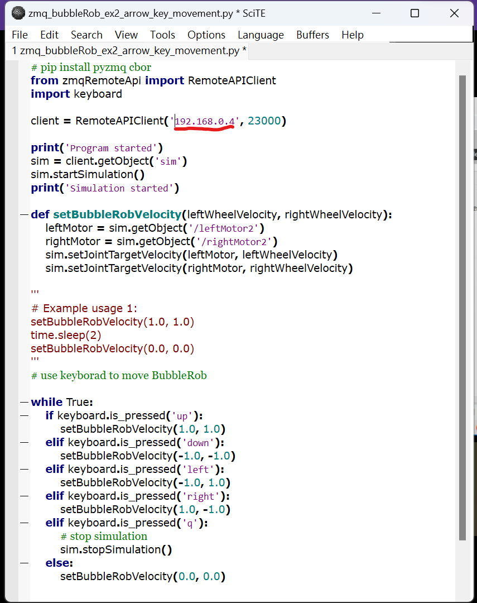

team10 <<
Previous Next >> pj2
team12
editor:41023114 王樟皓、41023126 卓桓琮
Step1:建立足球場景，透過onshape繪出足球的場景，足球分成兩部分第一部分為足球的牆壁第二部分為球門。足球的牆壁:wall 球門:door
Step2:轉成STL檔匯入coppaliasim場景中，放入先前製作的bobbleRob robot，並複製兩個在場景中，加入球體 過程:https://youtu.be/Rc-BSnYI17w
Step3:設定coppliasim中的參數
1.在兩個球門上加入感應sensor，以感測是否進球，將兩個seonsor拉到球門底下
2.設定ball的參數
3.bubbleRob robot 參數設定:bubbleRob
Step4:加入sensor程式碼-利用chatgpt 寫出程式碼-計時器(記分板-參考至ag2)
文字檔:sensor-program
function sysCall_init()
score1 = 0
remaining_time = 60 -- 1 minute
sensor = sim.getObject('./sensor')
xml = [[ ]]
ui = simUI.create(xml)
simUI.setPosition(ui, 0,0, true)
bubbleRob1 = sim.getObject('/bubbleRob1')
ball = sim.getObject('/ball')
bubbleRob2 = sim.getObject('/bubbleRob2')
initialPosition = sim.getObjectPosition(bubbleRob1, -1)
initialOrientation = sim.getObjectOrientation(bubbleRob1, -1)
initialPosition2 = sim.getObjectPosition(bubbleRob2, -1)
initialOrientation2 = sim.getObjectOrientation(bubbleRob2, -1)
initialballPosition = sim.getObjectPosition(ball, -1)
initialballOrientation = sim.getObjectOrientation(ball, -1)
end
function sysCall_actuation()
-- read the proximity sensor value
result=sim.readProximitySensor(sensor)
-- check if the remaining time is greater than 0
if(remaining_time > 0) then
-- check if the proximity sensor detects something
if(result>0) then
-- increase the score and update the UI label
score2 = score1+1
simUI.setLabelText(ui, 30, tostring(score2))
-- reset the objects' positions and orientations
sim.setObjectPosition(bubbleRob1, -1, initialPosition)
sim.setObjectOrientation(bubbleRob1, -1, initialOrientation)
sim.setObjectPosition(bubbleRob2, -1, initialPosition2)
sim.setObjectOrientation(bubbleRob2, -1, initialOrientation2)
sim.setObjectPosition(ball, -1, initialballPosition)
sim.setObjectOrientation(ball, -1, initialballOrientation)
-- update the score variable
score1=score2
end
-- update the remaining time and the UI label
remaining_time = remaining_time - sim.getSimulationTimeStep()
simUI.setLabelText(ui, 40, "Time left: "..math.floor(remaining_time).."s")
else
sim.stopSimulation()
end
end
第二版 sersor 程式碼
文字檔:sensor-program2
function sysCall_init()
score1 = 0
remaining_time = 1200 -- 20 minute
sensor = sim.getObject('./sensor1')
xml = [[ ]]
ui = simUI.create(xml)
simUI.setPosition(ui, 0,0, true)
bubbleRob1 = sim.getObject('/bubbleRob1')
ball = sim.getObject('/ball')
bubbleRob2 = sim.getObject('/bubbleRob2')
initialPosition = sim.getObjectPosition(bubbleRob1, -1)
initialOrientation = sim.getObjectOrientation(bubbleRob1, -1)
initialPosition2 = sim.getObjectPosition(bubbleRob2, -1)
initialOrientation2 = sim.getObjectOrientation(bubbleRob2, -1)
initialballPosition = sim.getObjectPosition(ball, -1)
initialballOrientation = sim.getObjectOrientation(ball, -1)
end
function sysCall_actuation()
-- read the proximity sensor value
result=sim.readProximitySensor(sensor)
-- check if the remaining time is greater than 0
if(remaining_time > 0) then
-- check if the proximity sensor detects something
if(result>0) then
-- increase the score and update the UI label
score2 = score1+1
simUI.setLabelText(ui, 30, tostring(score2))
-- reset the objects' positions and orientations
sim.setObjectPosition(bubbleRob1, -1, initialPosition)
sim.setObjectOrientation(bubbleRob1, -1, initialOrientation)
sim.setObjectPosition(bubbleRob2, -1, initialPosition2)
sim.setObjectOrientation(bubbleRob2, -1, initialOrientation2)
sim.setObjectPosition(ball, -1, initialballPosition)
sim.setObjectOrientation(ball, -1, initialballOrientation)
-- update the score variable
score1=score2
end
-- update the remaining time and the UI label
remaining_time = remaining_time - sim.getSimulationTimeStep()
simUI.setLabelText(ui, 40, "Time left: "..math.floor(remaining_time).."s")
else
sim.stopSimulation()
end
end
Step5:打開小白窗 加入程式碼 按go
文字檔:whitewindow
# pip install pyzmq cbor
from zmqRemoteApi import RemoteAPIClient
import keyboard
client = RemoteAPIClient('localhost', 23000)
print('Program started')
sim = client.getObject('sim')
sim.startSimulation()
print('Simulation started')
def setBubbleRobVelocity(leftWheelVelocity, rightWheelVelocity):
leftMotor = sim.getObject('/leftMotor')
rightMotor = sim.getObject('/rightMotor')
sim.setJointTargetVelocity(leftMotor, leftWheelVelocity)
sim.setJointTargetVelocity(rightMotor, rightWheelVelocity)
'''
# Example usage 1:
setBubbleRobVelocity(1.0, 1.0)
time.sleep(2)
setBubbleRobVelocity(0.0, 0.0)
'''
# use keyborad to move BubbleRob
while True:
if keyboard.is_pressed('up'):
setBubbleRobVelocity(1.0, 1.0)
elif keyboard.is_pressed('down'):
setBubbleRobVelocity(-1.0, -1.0)
elif keyboard.is_pressed('left'):
setBubbleRobVelocity(-1.0, 1.0)
elif keyboard.is_pressed('right'):
setBubbleRobVelocity(1.0, -1.0)
elif keyboard.is_pressed('q'):
# stop simulation
sim.stopSimulation()
else:
setBubbleRobVelocity(0.0, 0.0)
在football的場景加入計時器和記分板 過程:https://youtu.be/EZ_mE9P4j-s
第一版
第二版
Step6:連線對戰
1.查詢ipconfig 找到ipv4埠號

2.將自己ipv4埠號複製到小白窗的程式中

3.開始兩人對戰
Final:連線對打未完成 都有設定 防火牆也有關 但是對方就連不到
連線失敗過程:
football.ttt檔:pj1-football
team10 <<
Previous Next >> pj2